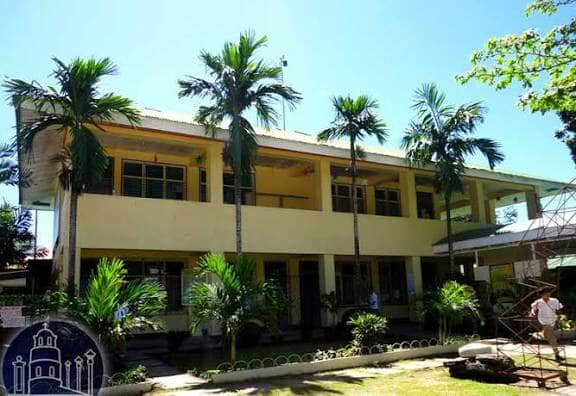
Welcome to RTPM-Dumaguete Science High School!
Excellence in Science, Leadership, and Values.

Description: Ramon Teves Pastor Memorial – Dumaguete Science High School is a public science high school located in Dumaguete City, Negros Oriental. The school provides advanced secondary education with strong focus on science, mathematics, research, and technology. It serves as the Regional Science High School for the region and is recognized for academic excellence and innovation in education. The school was established in 1988 to provide high quality science and mathematics education for academically talented students. It began with one class and later expanded into a full secondary school offering both junior high school and senior high school programs. Today, RTPM-DSHS continues to develop students’ skills in research, critical thinking, and leadership through specialized science programs, modern facilities, and academic competitions. It aims to prepare students for careers in science, technology, engineering, and other professional fields while promoting academic excellence and service to the community.
History:RTPM-DSHS was founded in 1988 in Dumaguete City, Negros Oriental. The school started with one class and one year level under a science-focused curriculum designed for academically talented students. At first, classes were held inside the campus of Dumaguete City National High School in Calindagan. The school later transferred to its permanent campus in Villa Amada, Barangay Daro, after a piece of land was donated by Ramon Teves Pastor. On July 21, 1993, the school became part of the national system of Regional Science High Schools through DECS Order No. 69. This recognition strengthened its role in providing advanced science and mathematics education in the region. From a single classroom in its early years, the school grew into a complete secondary institution offering junior high school and senior high school programs. Today it continues to promote research, innovation, and academic excellence among its students, known as DuScians.
Vision:“We dream of Filipinos who passionately love their country and whose values and competencies enable them to realize their full potential and contribute meaningfully to building the nation. As a learner-centered public institution, the Department of Education continuously improves itself to better serve its stakeholders.”

Mission: “To protect and promote the right of every Filipino to quality, equitable, culture-based, and complete basic education where students learn in a child-friendly, gender-sensitive, safe, and motivating environment. Teachers facilitate learning and constantly nurture every learner.”
Makadiyos, Makakalikasan, Makatao, Makabansa
Ramon Teves Pastor Memorial – Dumaguete Science High School provides advanced education in science, mathematics, technology, and research. The school offers junior and senior high school programs, research opportunities, academic clubs, competitions, and activities which develop students’ skills in leadership, innovation, and critical thinking.
Address: Maria Asunscion Avenue, Maria Asunscion Village, Barangay Daro, Dumaguete, Negros Oriental
Our curriculum is designed to nurture scientifically-inclined minds and prepare students for excellence in higher education and future careers.
Ramon Teves Pastor Memorial – Dumaguete Science High School offers these academic programs. Junior High School Program Grades 7 to 10 with strong focus on science, mathematics, research, and technology.
Senior High School Program Science, Technology, Engineering, and Mathematics strand which prepares students for careers in science and engineering. Research Program Students conduct scientific studies and present research in school and regional competitions. STEM Enrichment Activities Science fairs, robotics activities, math competitions, and innovation projects. Clubs and Student Organizations Academic clubs, leadership organizations, and interest based groups which support student development.
YES-O ,EMC ,ALAPAAP ,LIKAPIYAN ,ELYSIAN ,DAEBAK ,DMC ,DRC ,BSP ,GSP ,DEMS ,DMB ,TEATRO ,MUSEON ,EQUILIBRIUM
Gallery & Activities
Take a glimpse of our vibrant campus life, school events, and achievements.
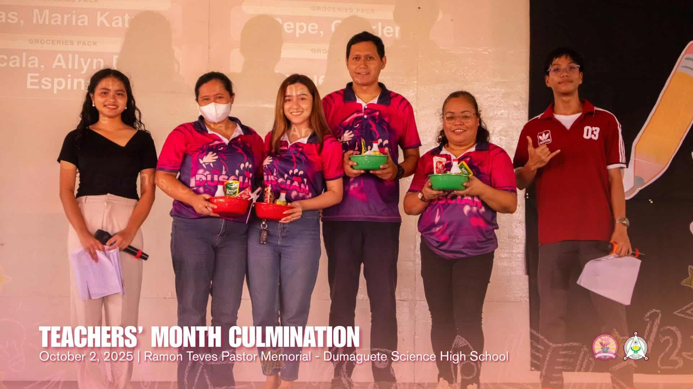

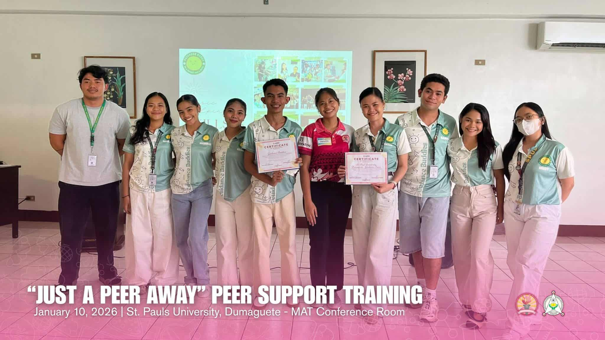
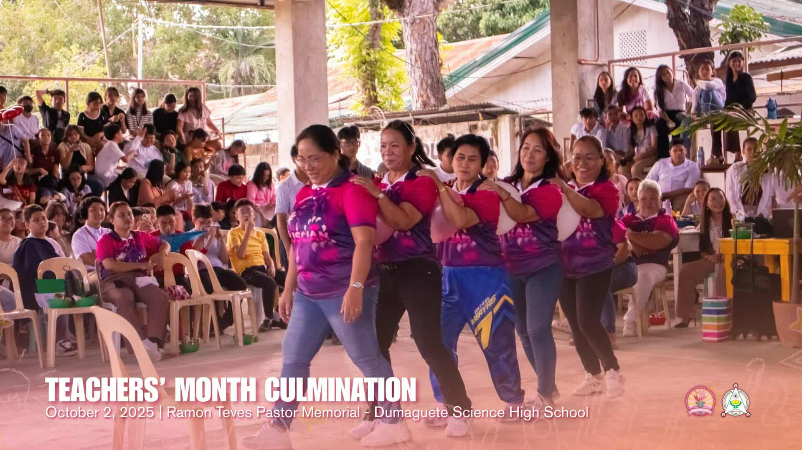
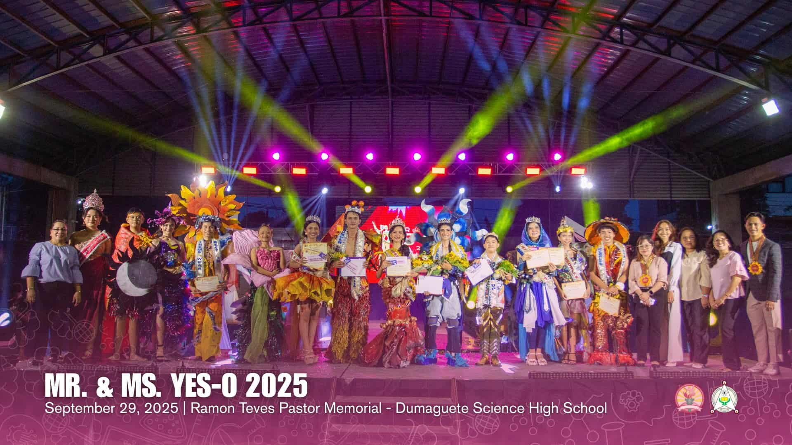
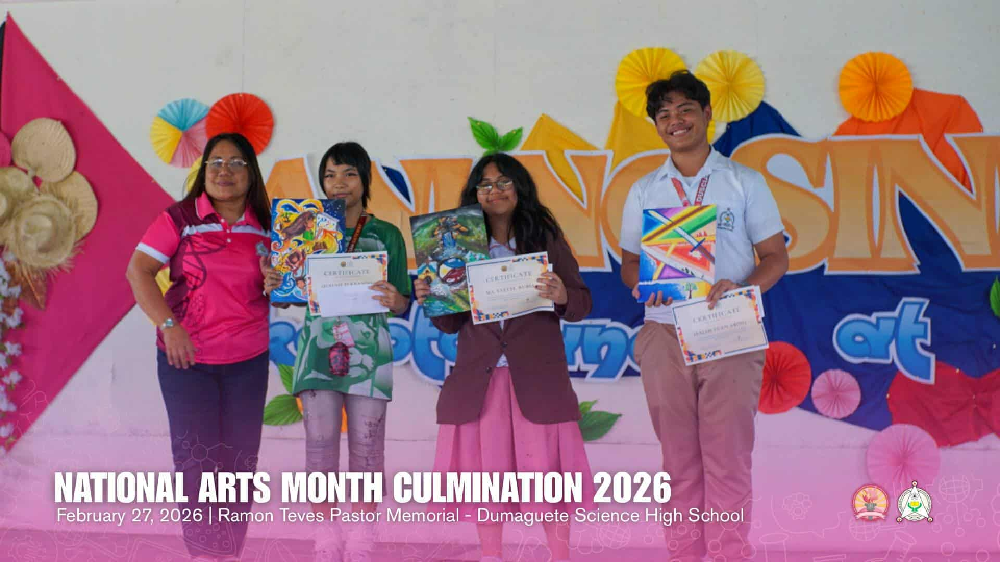
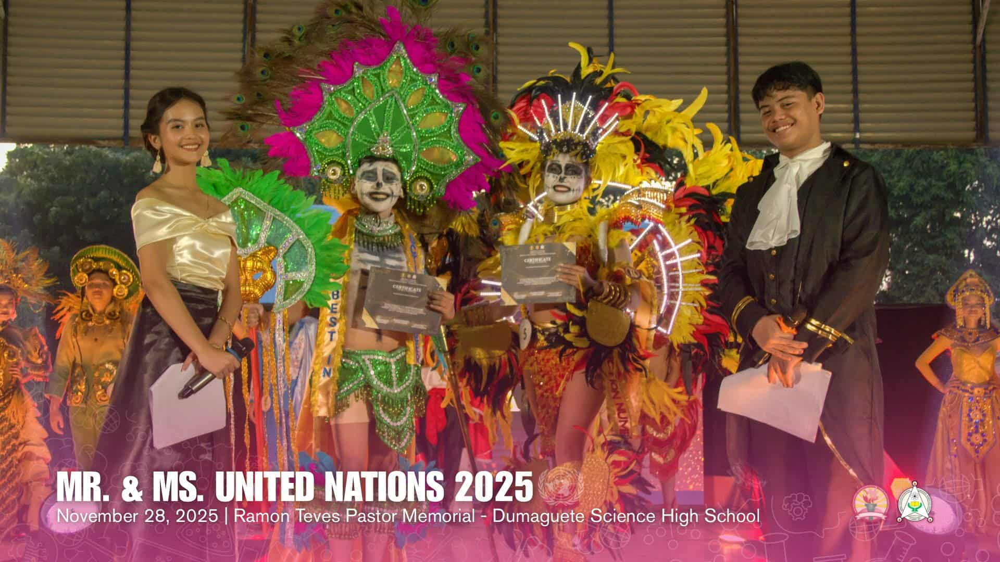
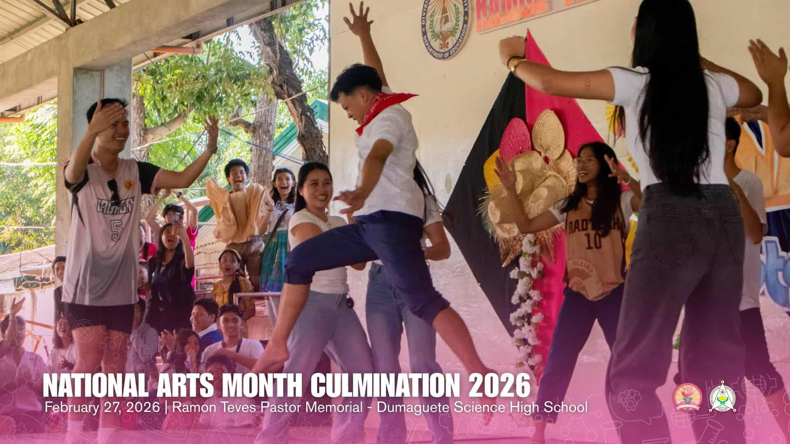

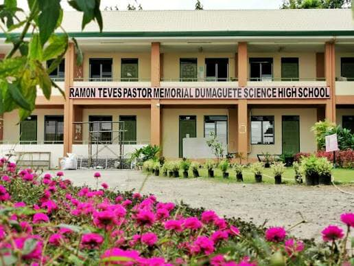

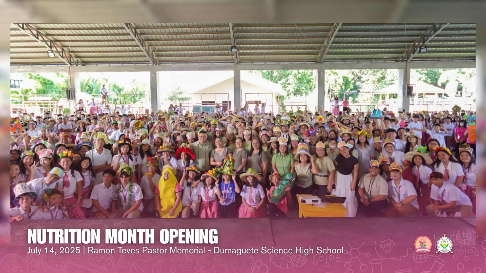
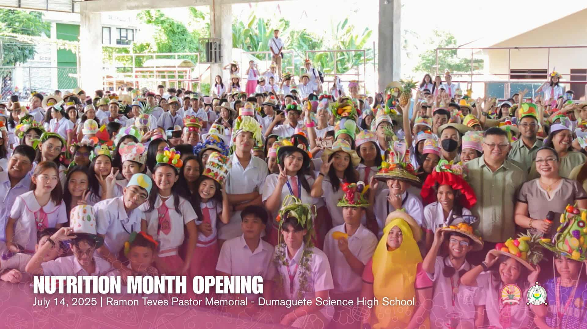
RTPM – Dumaguete Science High School Maria Asuncion Village, Brgy. Daro, Dumaguete City, Negros Oriental
Caraca, Jacob Aiden F.
Cacho, Jorame A.
Catacutan, Isabela Chryztal Z.
Navarro, Jhanea Verohn S.
Uy, Hayette Jasnia Y.
Villegas, Jairah Edzhyne A.